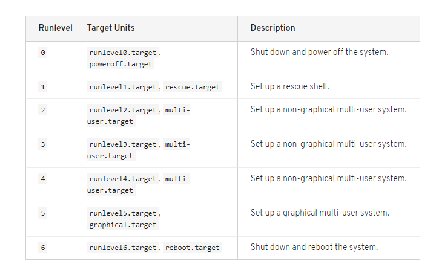

Previous Redhat version had SysV init to taken care for system runlevels. Run level from 0 t0 6. RHEL 7 runlevels has replaced with systemd targets. Systemd targets are represented by target units. Target units end with the .target
 #systemctl get-default ==> get the default target Change :- #systemctl set-default graphical.target If you reboot and the default will be graphical.target